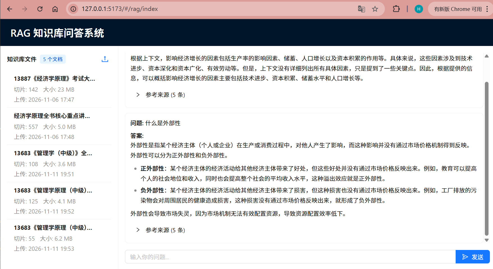
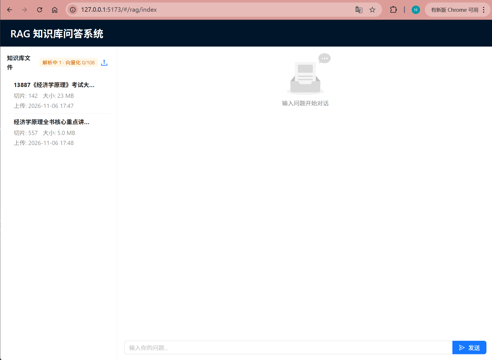
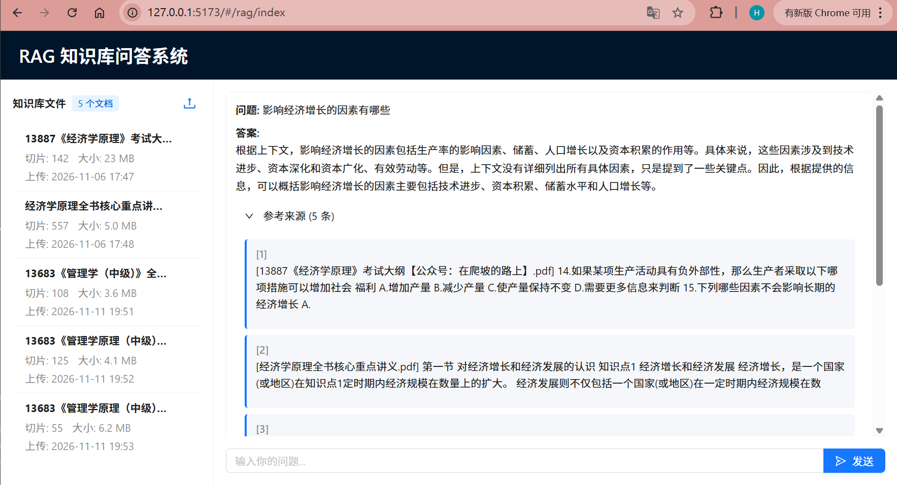

一、前言
RAG（Retrieval-Augmented Generation，检索增强生成）是当前构建”私有知识库问答”系统的主流方案。它的核心思想很简单：先检索、再生成——把你的文档切片后向量化存入向量数据库，用户提问时先从向量库召回最相关的几个片段，连同问题一起喂给 LLM，让它基于”有据可查”的上下文给出答案。
这样做的好处有三个：
- 缓解幻觉：LLM 只基于你提供的上下文作答，答不出就说找不到，不会瞎编。
- 知识新鲜：新增文档直接入库即可，不用重新 fine-tune 模型。
- 数据安全：跑在本地的 Ollama 上，文档和推理都不出你的机器。
本文用一个我实际做过的项目为例，把整个链路拆开来。后端用 FastAPI 搭服务，ChromaDB 做向量存储，Ollama + Qwen2.5 做本地大模型，LangChain 串起各个组件；前端用 React + TypeScript + Vite 做一个简洁的聊天界面，支持 SSE 流式输出。
二、整体架构
先看一张架构图：

整个系统的数据流：
1 | 用户提问 → 前端(fetch) → FastAPI后端 |
入库侧是另一条链路：
1 | 用户上传文档(tx/md/pdf/docx) |
三、准备工作
3.1 安装 Ollama 并下载模型
到 https://ollama.com 下载安装 Ollama，然后拉取我们要用到的两个模型：
1 | ollama pull qwen2.5:7b # 对话大模型 |
启动后 Ollama 默认监听 http://127.0.0.1:11434。它兼容 OpenAI 的 API 格式，所以我们可以直接用 LangChain 的 ChatOpenAI / OpenAIEmbeddings 来对接，只要把 base_url 指过去就行。
3.2 后端环境变量
项目根目录的 .env 文件（用 pydantic-settings 自动加载）：
1 | APP_NAME=RAG知识库服务 |
3.3 依赖安装
1 | pip install -r requirements.txt |
核心依赖有：fastapi、uvicorn、chromadb、langchain、langchain-chroma、langchain-openai、langchain-community、pydantic-settings。如果要支持扫描版 PDF 的 OCR，还得装 pymupdf 和 rapidocr-onnxruntime。
四、后端实现
后端项目结构：
1 | fastapi-learning-project/ |
4.1 文档加载、切片与 OCR 兜底
这是入库链路的第一步。document_loader.py 按后缀选择对应的 LangChain Loader 和 TextSplitter：
.txt/.md→TextLoader.pdf→PyPDFLoader.docx→Docx2txtLoader
切片器方面，Markdown 用 MarkdownTextSplitter（按 # 标题层级切，效果更智能），其他用通用的 RecursiveCharacterTextSplitter，chunk_size 设 300，重叠 50 字。重叠的目的是避免一句话被硬切在 chunk 边界上导致语义断裂。
1 | def get_text_splitter(file_path: str): |
关键点：扫描版 PDF 的 OCR 兜底。 现实中大量 PDF 是只有图片的扫描件，PyPDFLoader 读出来全是空字符串。项目里的做法是先做一次检测——平均每页能提取到的字符数低于 10，就判定为扫描件，自动降级到 OCR 流程。
OCR 用的是 rapidocr-onnxruntime（完全离线，不用调百度/阿里的 API），配合 pymupdf 把每页渲染成 2x 分辨率的 PNG。大文件还开了 ProcessPoolExecutor 进程池并行识别，小文件（< 10 页）直接串行避免进程池启动开销。如果进程池因为权限/容器限制挂了，还有断点续跑的兜底逻辑——从失败页开始串行识别，保证功能永远可用。
1 | def is_scanned_pdf(file_path: str) -> bool: |
4.2 向量化存储（ChromaDB）
LangChain 已经封装好了 Chroma 的对接，我们只需要配置好 embedding_function 和持久化目录即可。项目用 langchain-chroma 包：
1 | vector_db = Chroma( |
metadata 溯源是个容易忽略但非常重要的细节。 入库时给每个 chunk 都挂上这些 metadata：
| 字段 | 用途 |
|---|---|
source_hash |
文件内容 MD5，去重用、后续删除也要用 |
filename |
原始文件名，前端展示来源时用 |
file_size |
文档大小，统计信息 |
upload_time |
上传时间 |
save_path |
磁盘路径，删除时顺便清物理文件 |
分片是分批写的（每批 20 条），写一批调一次 progress_cb，前端就能实时看到”向量化 120/500”这种进度条。
删除就简单了：按 source_hash 查出来所有 chunk ID，批量 vector_db.delete(ids=...)，再从 metadata 里拿 save_path 删磁盘文件。
4.3 RAG 检索 + Gap 过滤
这是 RAG 质量的核心。用户提问后，先做向量相似度检索：
1 | vector_db.similarity_search_with_score(question, k=5) |
返回的 score 是 L2 距离，越小越相似。问题来了：直接把 top_k 都塞给 LLM 吗？实测下来，相关 chunk 和不相关 chunk 的分数之间通常有明显的跳变。比如返回 5 条，分数是 [0.77, 0.79, 1.53, 1.56, 1.58]——前两条明显是真相关，后面三条的距离一下跳到 1.5+，大概率是噪声。
所以项目里写了一个 _filter_by_gap 函数：找最大跳变点，跳变幅度要超过当前最高分的 30% 才算有效，只保留跳变之前的 chunk。
1 | def _filter_by_gap(results, min_gap_ratio: float = 0.3): |
这个小技巧成本极低，但对减少 LLM 的”上下文污染”效果很明显。
4.4 Prompt 构造 + LLM 调用
检索出相关 chunk 后，拼一个简单但有效的 Prompt：
1 | 你是知识库问答助手，只根据下面【上下文】回答问题。 |
LLM 的 temperature 设成 0.3——知识库问答场景需要稳定、准确的输出，温度低一点好。
4.5 难点：SSE 流式问答
这是后端最”硬核”的部分。普通的 llm.invoke() 要等整段答案生成完才返回，体验差。项目用 LangChain 的 astream + FastAPI 的 StreamingResponse 实现了边生成边推送。
整体链路：
rag_query_stream是一个async生成器（async def ... yield），每yield一次就是一个事件- FastAPI 路由里把它包进
StreamingResponse，media_type设成text/event-stream - SSE 事件结构：先推
source（命中的来源列表，此时 LLM 还在生成，前端可以先展示）→ 然后是 N 个delta（每次吐一小段文字）→ 最后done或error
1 | async def rag_query_stream(question: str, top_k: int = 5): |
这里踩了好几个坑：
坑 1：检索是同步阻塞调用。 Embedding 要请求 Ollama 的 HTTP 接口，在 async 函数里直接调会卡住事件循环。解决方式是 asyncio.to_thread(_search, ...)，把检索丢进线程池。
坑 2：StreamingResponse 的异常处理位置。 响应头一旦发出去，全局异常处理器就接不到后面抛的异常了——前端只会看到连接被硬断开。所以异常处理必须写在生成器内部（try/except 包住 async for 那个循环），出错时手动 yield 一个 {"type": "error", ...} 事件。
坑 3：Nginx/反向代理的缓冲。 如果前端通过 Nginx 反代后端，Nginx 默认会攒够一批数据才转发，流式就失效了。所以响应头必须加 X-Accel-Buffering: no 和 Cache-Control: no-cache。
4.6 文档上传：异步后台任务 + 进度查询
上传是耗时操作（PDF OCR、向量化都要时间），不能让前端一直等。用 FastAPI 的 BackgroundTasks 做异步：上传接口立即返回 task_id，后台解析入库，前端轮询进度。
路由流程：
- 校验文件后缀（只允许
.txt.md.pdf.docx） - 读取文件内容 → 算 MD5 → 向量库查一下是否已存在（去重）
- 保存到磁盘（文件名前面加 UUID 防重名）
create_upload_task登记任务到内存字典background_tasks.add_task(run_upload_task, ...)丢进后台执行- 立即返回
task_id
run_upload_task 里的每一步都调 task.update(progress=...) 更新进度——OCR 阶段报 OCR 3/20，向量化阶段报 向量化 120/500，前端轮询 /doc/upload/status/{task_id} 就能实时展示。
任务状态存的是内存字典，单进程部署够用，重启后丢失但不影响向量库里已入库的数据。如果后续要做多进程/分布式，换成 Redis 就行。
4.7 统一异常与响应封装
项目自己实现了一套业务异常 + 全局异常处理器，所有接口返回统一的 {code, msg, data} 结构。前端 axios 拦截器里做一次解包（code === 200 时直接 response.data = body.data），业务代码里就不用每次都判断 code 了。
五、前端实现
前端项目 fastapi-rag-web，技术栈：React 19 + TypeScript + Vite 8 + Ant Design 6。
5.1 项目结构
1 | fastapi-rag-web/ |
页面长这样：

5.2 重点：SSE 流式接口的前端实现
后端用的是 StreamingResponse 返回 SSE，但前端 axios 和 EventSource 都不好用：
EventSource只能发 GET 请求，不能带 JSON body，而我们的接口是 POSTaxios要等整个响应体收完才 resolve，拿不到”边收边处理”的能力
所以前端用原生 fetch + ReadableStream 来手动读流。整个过程分三步：
第一步：发起 fetch，拿到 response.body（一个 ReadableStream）：
1 | const res = await fetch(`${BASE_URL}/rag/query/stream`, { |
第二步：循环读取，注意中文是多字节：
reader.read() 返回的是原始字节 Uint8Array。中文一个字可能跨两个 chunk，直接丢给 JSON.parse 会炸。所以用 TextDecoder，传 stream: true 让它自己把凑不成一个完整字符的剩余字节留到下次拼。
1 | while (true) { |
第三步：解析 SSE 事件，分发到对应回调：
1 | for (const block of blocks) { |
前端界面效果如图（打字机效果，来源列表先出来，然后答案一个字一个字蹦出来）：

5.3 界面其他功能
- 文档列表页：调
/doc/stats显示文档总数、每个文档的 chunk 数、上传时间；支持删除（调/doc/delete，顺便清磁盘文件） - 上传功能：调
/doc/upload→ 拿到task_id→ 轮询/doc/upload/status/{task_id}→ 根据status和progress更新 UI - Markdown 渲染：答案用
react-markdown+remark-gfm渲染，支持表格、代码块等
六、核心难点 & 避坑清单
把整个项目里最容易踩坑、最值得记住的点汇总一下：
1. Ollama 兼容 OpenAI API，但要写对 base_url
1 | ChatOpenAI( |
/v1 不能丢，否则 LangChain 拼出来的请求 URL 是错的。
2. 检索结果一定要做后处理
直接用 top_k 很容易把不相关的 chunk 塞给 LLM。gap 过滤 是成本极低的一种方式（只需比较分数差值），实测有效。更高级的做法可以引入 reranker（比如 bge-reranker）做二次排序，但 gap 过滤作为第一道关卡是必须的。
3. Async 里不要直接调同步阻塞代码
检索要请求 Embedding 接口，是同步阻塞的。在 async 函数里用 asyncio.to_thread() 丢进线程池，不要用 asyncio.run_in_executor()（已经被废弃）。
4. StreamingResponse 的异常处理位置很重要
响应头一发出去，全局异常处理器就失效了。所以 try/except 必须写在生成器函数内部，出错时手动 yield 一个 error 事件。
5. 扫描版 PDF 是 RAG 项目的重灾区
不做 OCR 兜底的话，扫描件入库后检索永远召回不到，答不出任何问题。检测方式很简单——统计每页能提取到的字符数，低于某个阈值就走 OCR。OCR 本身也有坑：rapidocr-onnxruntime 在中文场景下效果好，而且完全离线；进程池在某些环境下可能不可用，要有串行兜底。
6. ChromaDB 的 metadata 是”隐形的核心”
后续要去重、删除、统计，全靠 source_hash 和 filename 这几个 metadata。别偷懒，入库时一定要挂上。
7. 前端 SSE 流式不要用 axios
记住一句话：axios 等整包，fetch 才能读流。自己封装一个 ragQueryStream(question, { onSource, onDelta, onDone, onError }) 函数，业务组件只负责把回调传进去。
七、快速启动
后端
1 | cd fastapi-learning-project |
启动后：
- Swagger UI：http://127.0.0.1:8000/docs
- 健康检查：http://127.0.0.1:8000/
接口一览：
| 方法 | 路径 | 说明 |
|---|---|---|
| GET | / |
服务健康检查 |
| POST | /api/v1/doc/upload |
上传文档（异步） |
| GET | /api/v1/doc/upload/status/{task_id} |
查询上传进度 |
| GET | /api/v1/doc/stats |
知识库统计 |
| POST | /api/v1/doc/delete |
删除文档 |
| POST | /api/v1/rag/query |
RAG 问答（一次性返回） |
| POST | /api/v1/rag/query/stream |
RAG 问答（SSE 流式） |
前端
1 | cd fastapi-rag-web |
开发服务器默认在 http://localhost:5173。
八、总结
做了这个项目之后，我对 RAG 整个链路有了非常扎实的理解。最核心的收获：
- RAG 的效果 = 检索质量 × 切片质量 × Prompt 质量。模型本身的能力反而是最不重要的那个环节——一个好的检索 + 好的切片 + 好的 Prompt，即使用 7B 的小模型也能出像样的效果。
- 工程细节决定体验。流式输出、OCR 兜底、进度查询、去重、gap 过滤……这些是让 demo 变成”能用”的关键。
- LangChain 帮你省了很多胶水代码，但核心逻辑还是要自己写。检索后怎么处理 chunk、Prompt 怎么拼、OCR 失败了怎么办、流式异常怎么处理，LangChain 不替你做这些。
两个项目的代码都开源了，直接拿去改就能跑：
- 后端：
fastapi-learning-project（Gitee） - 前端：
fastapi-rag-web（Gitee）
祝大家都能搭出自己的本地知识库。